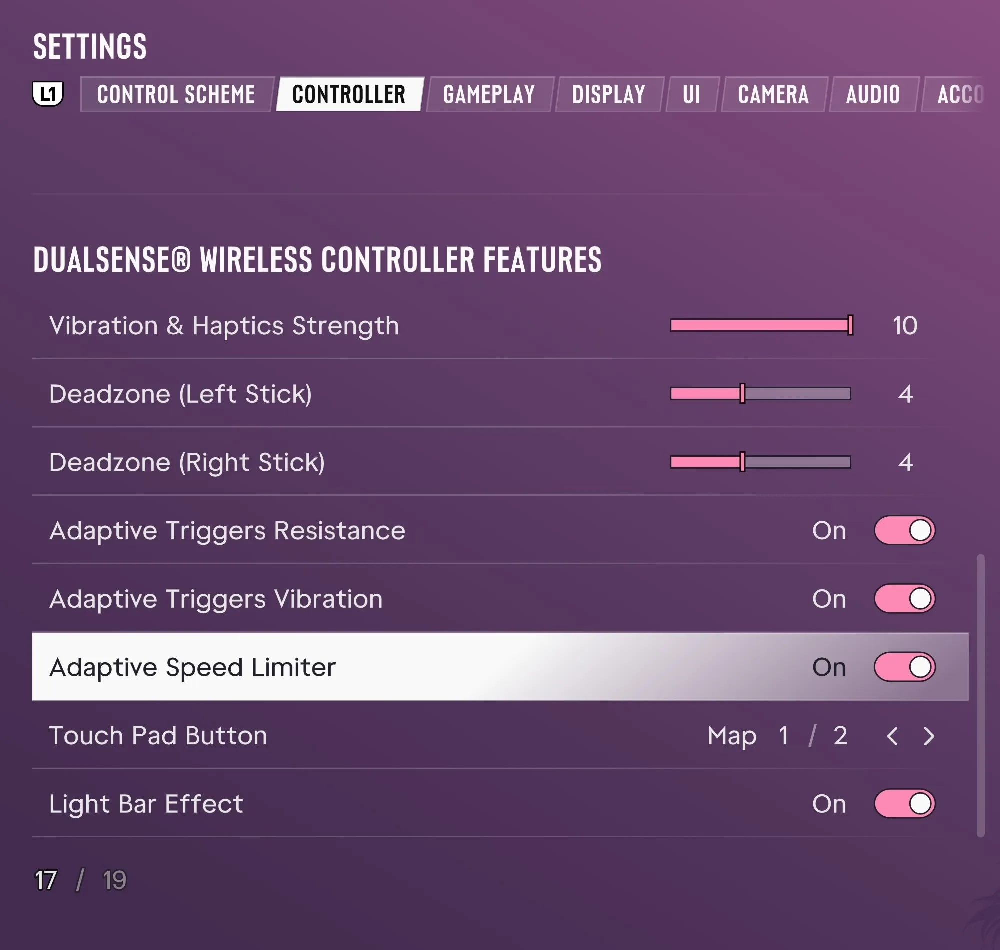

先测右摇杆松手后会不会动
- 在故事模式的自由探索里，站定后让镜头对着墙角或路牌，松开摇杆。观察整幅画面是否一直向同一方向转动。
- 打开暂停 → 设置（Settings）→ Controller。如果当前在 Control Scheme，按一下 R1。往下翻到 DualSense Wireless Controller Features，记下右摇杆死区 Deadzone (Right Stick) 的当前数字。
- 如果松手后镜头会偏转，死区加一格，再到原地复测。如果松手后稳定但轻推时半天没反应，死区减一格。每次只改一项，一旦出现松手仍偏转就退回上一格。


轻推有反应，但准星一推就过头
回到 Controller 顶部的 Aim & Look Sensitivity。只在按住 L2 瞄准时过头，按方向分别试降一格 Horizontal Aim Sensitivity 或 Vertical Aim Sensitivity。起步还行、推一会儿突然变快，再试把 Aim Acceleration 降一格。每次回同一个参照物重复小幅移动，普通转镜头则用对应的 Look 项测试。
设置合适后再判断剩下的问题
城市繁忙路段和空旷区域可以分别测试。死区和灵敏度改变的是手柄响应，游戏帧率仍取决于版本和场景。恢复原值时，在对应行按画面显示的 Restore Default，或填回先前记下的数字。同一只手柄在别的游戏里也会自行转镜头，可以换一只复测，再按 PlayStation 官方步骤处理控制器。